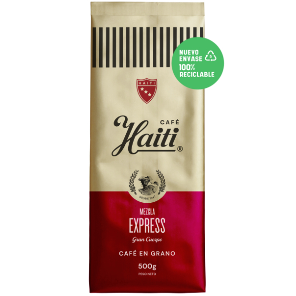

Blogs > Caso curioso #1
CASO CURIOSO #1: El secreto del café de grano

El café de grano recién molido libera cientos de compuestos aromáticos que se pierden en pocos minutos. Por eso, moler justo antes de preparar es el paso más simple para mejorar tu taza.
Para métodos filtrados como la prensa francesa conviene una molienda gruesa, mientras que para el espresso se necesita una molienda fina y uniforme. El tueste medio, como el de nuestro Café de Grano Premium 500g, equilibra dulzor y acidez para el consumo diario.
Guarda tus granos en un envase hermético, lejos de la luz y el calor, y evita el refrigerador: la humedad es su peor enemiga.
Volver a blogs